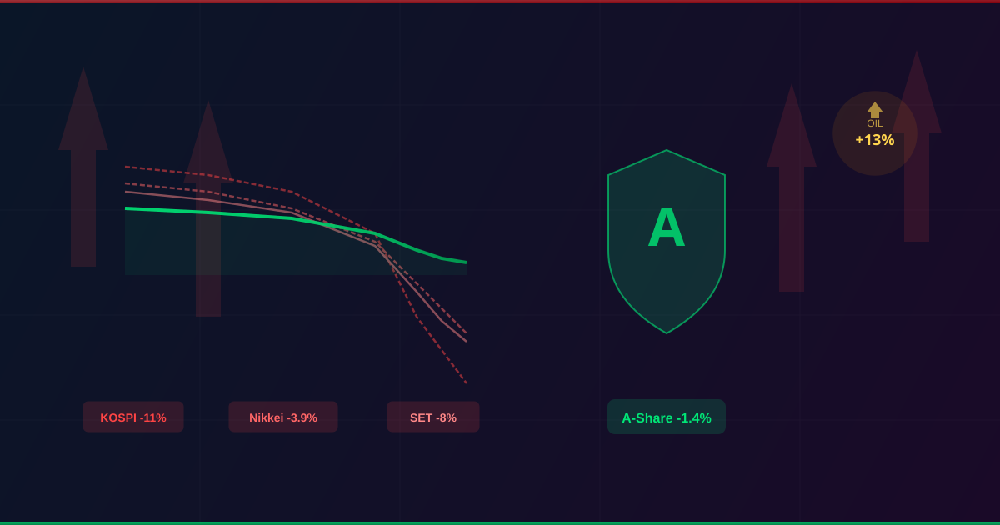
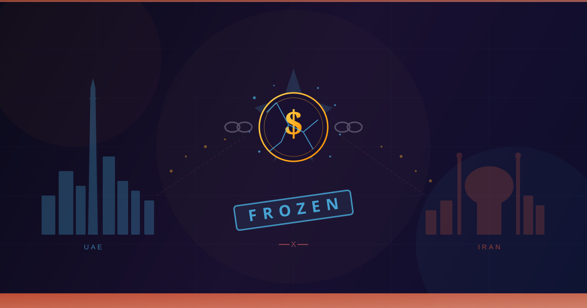

中东打仗，亚洲股市血流成河，为什么A股反而成了"避风港"？
韩国KOSPI暴跌11%，日经跌3.9%，泰国崩8%，上证指数只跌了1.4%。在亚洲一片哀鸿遍野中，A股凭什么成了相对最稳的那一个？
每周精选国际主流财经媒体的重磅报道，用深度视角解读新闻背后的逻辑与博弈，让复杂的世界变得清晰。

韩国KOSPI暴跌11%，日经跌3.9%，泰国崩8%，上证指数只跌了1.4%。在亚洲一片哀鸿遍野中，A股凭什么成了相对最稳的那一个？

一场没有硝烟的战争，可能比导弹更致命。阿联酋正在考虑冻结伊朗在其境内的数十亿美元资产，如果这根"金融氧气管"被拔掉，德黑兰将面临怎样的困境？
我是科技马前卒的主理人。在信息爆炸的时代，真正有价值的不是新闻本身，而是对新闻的理解。
我每天阅读彭博社、华尔街日报、纽约时报、经济学人等国际主流财经媒体的报道，筛选出最值得中国读者关注的内容，用深度分析和独立观点，帮你看透新闻背后的利益博弈。
这个网站是文章的长期归档。更多内容，欢迎关注我的微信公众号。
国际财经深度解读
帮中国人读懂西方财经头条